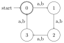
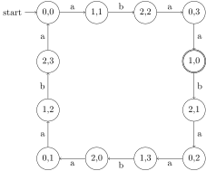
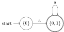
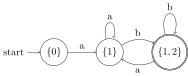
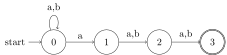
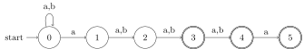
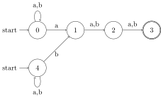
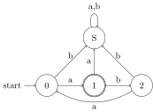

Given two FSAs \(A\) and \(B\) that recognize the languages \(L(A)\) and \(L(B)\), respectively, one can construct an automaton \(A \cap B\) that recognizes \(L(A) \cap L(B)\). This shows that the class of regular languages is closed under intersection. Closure under intersection is an incredibly valuable property because it means that a complex pattern can be factored into simpler patterns such that the intersection of all the simple patterns produces the complex pattern.
The construction of \(A \cap B\) is fairly simple as it all amounts to constructing an automaton that runs \(A\) and \(B\) in parallel. But one thing after another: intuitively, a string \(s\) is in the intersection of \(L(A)\) and \(L(B)\) only if there is an accepting run of \(A\) over \(s\) and an accepting run of \(B\) over \(s\). So if we were to run \(A\) and \(B\) in parallel, both would have to end up in a final state.
Let’s imagine this in an even more visual manner. Suppose our automata \(A\) and \(B\) are as below.

Here \(A\) recognizes strings of the form \(\mathit{a(baa)^*}\) (where \(^*\) means 0 or more iteration of the bracketed part). And \(B\) recognizes any string over \(a\) and \(b\) whose length is a multiple of \(4\) (including the empty string \(\varepsilon\), whose length of 0 is a multiple of 4). So \(abaa\) would be recognized by both and thus is in the intersection of \(L(A)\) and \(L(B)\), whereas \(a\) would be rejected by \(B\) and \(abab\) would be rejected by \(A\).
Now imagine that you put your left index finger on the initial state of \(A\), and your right index finger on the initial state of \(B\). Move your fingers in parallel as you move along with the symbols in \(\mathit{abaa}\):
Using the same “finger pushing” procedure, say for each one of the following strings whether it is a member of \(L(A) \cap L(B)\).
You do not need to write down each individual move of your finger, “Yes” and “No” are sufficient answers.
Based on this intuition, we construct an automaton where each state keeps track of the position of our fingers in these two automata. For the string above, we start out in \((A:0, B:0)\). This means that one finger is on state \(0\) in automaton \(A\), the other on state on state \(0\) in automaton \(B\). The first \(a\) transition then moves us into the state \((A:1, B:1)\) — state 1 in automaton \(A\) and state 1 in automaton \(B\). After that, a \(b\) transition moves us to \((A:2, B:2)\), from which another \(a\) gets us to \((A:0, B:3)\), and from there to \((A:1, B:0)\) via yet another \(a\). But that’s just the automaton for one specific string, we need to construct an automaton that emulates \(A\) and \(B\) for any string.
This is actually fairly easy, we just have to consider all symbols and how they may move us between states. For \(A\) and \(B\), the only relevant symbols are \(a\) and \(b\). For any two states \((A:i, B:x)\) and \((A:j, B:y)\), there is a transition labeled \(\sigma\) from \((A:i, B:x)\) to \((A:j, B:y)\) iff there is a \(\sigma\)-transition from \(i\) to \(j\) in automaton \(A\) and a \(\sigma\)-transition from \(x\) to \(y\) in automaton \(B\). Furthermore, a state \((A:i, B:x)\) is initial iff both \(i\) and \(x\) are initial in \(A\) and \(B\), respectively. Similarly, \((A:i, B:x)\) is final iff both \(i\) and \(x\) are final in \(A\) and \(B\), respectively.
Applying this construction to the two automata above yields the automaton below. For simplicity, we write \(i, x\) instead of \((A:i, B:x)\).

Let \(A \mathrel{\mathop:}=\left \langle \Sigma, Q_A, I_A, F_A, \Delta_A \right \rangle\) and \(B \mathrel{\mathop:}=\left \langle \Sigma, Q_B, I_B, F_B, \Delta_B \right \rangle\) be two FSAs. The intersection automaton \(A \cap B\) is the FSA \(\left \langle \Sigma, Q_A \times Q_B, I, F, \Delta \right \rangle\) such that
For all FSAs \(A\) and \(B\) there exists an FSA \(C\) such that \(L(A) \cap L(B) = L(C)\).
In an earlier exercise you had to construct FSAs for \(\mathit{a^* b^+}\) and \(\mathit{a^+ b^+ a^*}\). Construct their intersection automaton and verify that it recognizes the language \(\mathit{a^+ b^+}\).
This exercise is optional!
The theorem above still requires a proof. We have to show that the intersection automaton \(C \mathrel{\mathop:}=A \cap B\) does indeed recognize \(L(A) \cap L(B)\). This breaks down into two separate claims:
Try to prove each statement.
Notice that nothing in our definition of FSAs prevents the set \(\Delta\) of transitions from containing two transitions of the form \(\left \langle q, \sigma, u \right \rangle\) and \(\left \langle q, \sigma, v \right \rangle\). In this case, a single string containing the symbol \(\sigma\) may have multiple runs because we can move from \(q\) to \(u\) or to \(v\). Such an automaton is called non-deterministic. But multiple transitions aren’t the only sources of non-determinism. An automaton with multiple initial states is also non-deterministic as we have a choice as to where we want to start. Finally, the automaton may also contain a transition labeled with the empty string \(\varepsilon\). This too, creates a choice point: should the automaton follow the \(\varepsilon\)-transition, or read in the next symbol and take the transition for that symbol? Whenever an automaton furnishes choices of this kind, it is non-deterministic. Automata for which this not the case are called deterministic.
An FSA \(\left \langle \Sigma, Q, I, F, \Delta \right \rangle\) is deterministic iff all of the following hold:
An automaton is non-deterministic iff it is not deterministic.
The familiar automaton below is non-deterministic because there are two distinct arcs out of \(0\) that are both labeled \(a\).

Formally, \(\left \langle 0, a, 1 \right \rangle \in \Delta\) and \(\left \langle 0, a, 2 \right \rangle \in \Delta\), yet \(1\) and \(2\) are distinct states.
Construct a non-deterministic automaton that recognizes the language \(ac^*b \cup acb^*\). Careful, the automaton should recognize all strings of this language, but no more than that. For instance, \(\mathit{accbb}\) is not a string of this language.
Determinism is a very desirable property. Not only does it simplify certain proofs, it also is essential for efficient recognition. With a deterministic automaton, recognition proceeds in real-time. Just as in a prefix tree, we can immediately start moving through the automaton as the symbols of the string are read in.
With a non-deterministic automaton, recognition is more complex. Suppose we reach a fork where we could move from \(q\) to \(u\) or \(v\). We could try \(u\), and if we’re lucky this is the correct path. But if we do not make it to a final state along this path, we have to backtrack to \(q\) and try \(v\) instead. Since each state may have many different choice points, recognition becomes much slower. If every state has at most \(m\) choice points, recognition of a string of length \(n\) can take up to \(m^n\) steps. That is truly awful, with \(m = 4\) and a short string of length \(5\) this may already require \(4^5 = (2^2)^5 = 2^{10} = 1024\) steps instead of just \(5\).
An alternative to this kind of serial search is to do parallel search: whenever we reach a state with \(m\) choices, we make \(m\) copies of the automaton and each copy proceeds along a different possible path. Now recognition can again proceed in real-time (modulo the cost of spawning copies of the automaton), but we consume a lot of memory. This situation is very common in software engineering, and it is known as a time-space tradeoff: either we do it slow but memory-efficient, or we do it fast but at a much higher memory cost.
The copy-spawning idea can be compiled directly into a non-deterministic automaton by determinizing it. The idea isn’t too dissimilar from the construction of the intersection automaton: each state consists of multiple components that encode the state of one of the spawned copies. The construction makes some tweaks though to reduce state bloat. If one were to represent the state configuration of \(m\) copies of the FSA as an \(m\)-tuple of states, then one could easily end up with \(m\)-tuples that contain many redundant components. For example, the states \(\left \langle u,v,u \right \rangle\) and \(\left \langle u,u,v \right \rangle\) encode the same information: one copy is in state \(v\), the other two in state \(u\). Since all copies are exactly the same automaton, there is no point in maintaining two copies that are both in state \(u\). Instead, we can use sets, so that \(\left \{ u,v,u \right \} = \left \{ u, u, v \right \} = \left \{ u,v \right \}\). So now states are chosen from \(2^Q\). A state like \(\left \{ u \right \}\) encodes that we only need one copy of the machine, which is in state \(u\). If we then transition from \(\left \{ u \right \}\) to \(\left \{ v,w \right \}\), that is tantamount to saying “we had a single automaton in state \(u\), and then we spawned a copy so that we now have one automaton in state \(v\) and one in state \(w\)”. And if we switch from \(\left \{ v,w \right \}\) to \(\left \{ x \right \}\), this means that both copies of the automaton moved into state \(x\), so we destroyed one of the copies as it had become redundant.
Let \(A \mathrel{\mathop:}=\left \langle \Sigma, Q, I, F \Delta \right \rangle\) be a non-deterministic FSA. Then the determinization of \(A\) is the FSA \(\mathrm{Det}(A) \mathrel{\mathop:}=\left \langle \Sigma, 2^Q, \left \{ I \right \}, F_D, \Delta_D \right \rangle\) such that
When manually determinizing an FSA, it is best to follow this incremental procedure:
Here’s a concrete example. The language \(a^+\) is recognized by the two automata below. The first one is deterministic, the second one non-deterministic.
Let’s apply the determinization procedure to the non-deterministic FSA. For succinctness, let \(N\) be the name of the non-deterministic FSA and \(D\) its deterministic counterpart.
The determinized FSA is shown below. Note that it looks exactly like the deterministic one above, with the only difference being the names of states.

Consider the slightly more complicated FSA below.
Determinization yields the equivalent automaton below:

You should verify for yourself that you can correctly construct this automaton.
In the previous two examples, determinization does not increase the size of the automaton. in general, though, determinization can cause an exponential blow-up: determinizing a non-deterministic FSA with \(n\) states may yield a deterministic FSA with \(2^n\) states. That’s huge. For instance, a 10-state automaton might have 1024 states after determinization. A 20-state automaton over a million!
In practice, the blow-up is not as bad, but it isn’t uncommon for automata size to double, triple, or quadruple. As a concrete example of this, determinize the automaton below.

Only for the brave!
The automaton above doubles its size after determinization. What about the automaton below?

Determinization does not necessarily increase the size of an automaton. If the original automaton contains some redundancies, determinization can eliminate those.
The automaton below is a slightly redundant machine for accepting all strings over \(a\) and \(b\) that contain at least three symbols.

What does it look like after determinization?
There are two reasons why a string \(s\) might not be recognized by an automaton \(A\): either there is a run of \(A\) over \(s\) that is not accepting, or there is no run at all because at some point we reach a state from which no transition can be taken.
Consider once more the automaton for \(\mathit{a(baa)^*}\).
This automaton rejects \(\mathit{ab}\) because the run for this string ends in state \(2\), which is not a final state. But it also rejects \(\mathit{abb}\) because there is no \(b\)-transition from \(2\).
It is sometimes convenient to eliminate the latter case by adding a sink state. This sink state is never a final state! For every state \(q\) that currently has no \(\sigma\)-transition emanating from it, we add a \(\sigma\)-transition to the sink state. From the sink state, every \(\sigma\)-transition can only take us back to the sink state. So once we end up in the sink state, we are trapped and cannot reach a final state anymore. Adding a sink state ensures that there is a run for every \(s \in \Sigma^*\) without altering the recognized string language. Hence the only distinction between recognized and rejected strings is whether their run is accepting, not whether they have a run at all.
Here is the result of adding a sink state \(S\) to the automaton above:

For each one of the following strings, give its run according to the automaton above with a sink state.